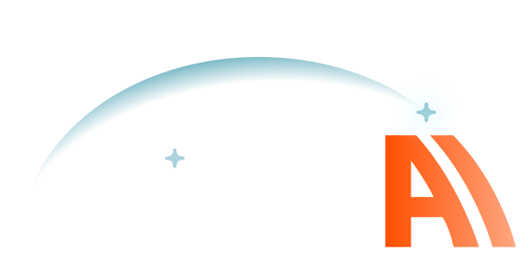
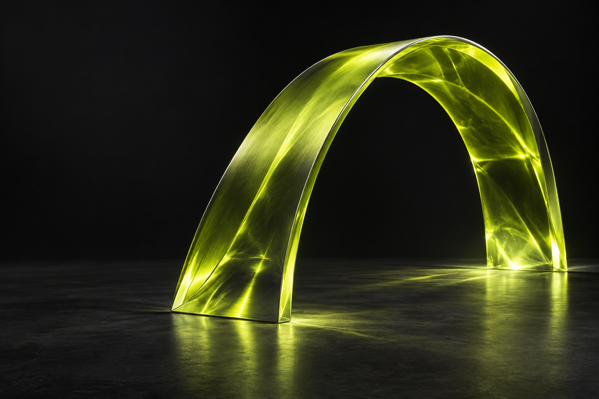
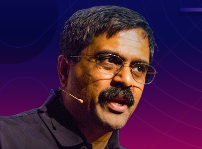

AI foundations
Understand the models, ideas, and tradeoffs behind intelligent applications.


Meet the people exploring AI. Exchange experience, ask your questions, and make connections that continue beyond the conference.
Talk with fellow developers and speakers about the questions on your mind. Compare notes between sessions, get a different perspective over a meal, and get to know people who share your curiosity.

The technical program gives us common ground: real problems to discuss, experiences to compare, and ideas to explore together.
Understand the models, ideas, and tradeoffs behind intelligent applications.
Explore the engineering decisions that turn promising demos into useful systems.
Examine how agents use tools, collaborate, and operate within real constraints.